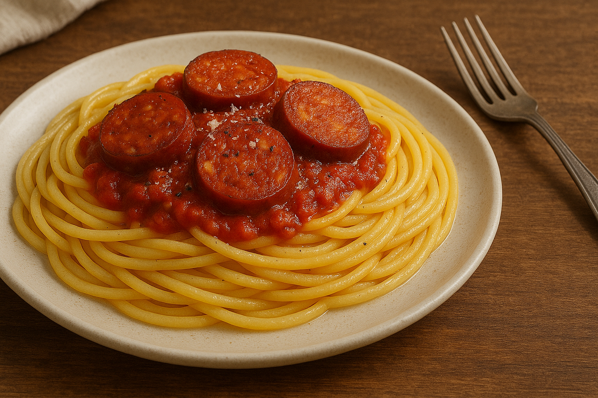

Siciliansk Tomatsovs med Mascarpone

Denne hjemmelavede tomatsovs i siciliansk stil laves med modne cherrytomater, en cremet klat mascarpone og – ikke at forglemme – masser af kærlighed.
Perfekt som base til pasta, som dip eller til at hælde over bagte grøntsager. Den enkle kombination af søde cherrytomater og blød mascarpone giver en rund, fyldig smag,
der vil få dig til at drømme om Sicilien. Nyd saucen straks, mens den er varm, og lad dig inspirere af sol, saltvand og kærlighed til mad!
Ingredienser (ca. 4 dl sovs)
- 500 g modne cherrytomater (gerne blandede farver)
- 2 spsk ekstra jomfru olivenolie
- 1 lille løg, finthakket
- 2 fed hvidløg, knuste og skåret i tynde skiver
- ½ tsk tørret oregano
- Et godt nip tørret chili eller et par flager (valgfrit, hvis du kan lide lidt varme)
- 100 g mascarpone (stuetemperatur)
- Frisk basilikum (et par blade til pynt og smag)
- Salt og friskkværnet peber
- En skefuld kærlighed (aldrig manglede i denne opskrift!)
Fremgangsmåde
- Skyl cherrytomaterne grundigt og halver dem, så de er klar til stegning.
- Varm olivenolien op i en bred pande ved middel varme. Tilsæt finthakket løg og steg i 3–4 minutter, indtil løget er gennemsigtigt, men ikke branket.
- Skub løg til siden, tilsæt hvidløgsskiverne, og steg i 1 minut, indtil hvidløget begynder at dufte let uden at tage farve. Tilsæt herefter de halverede cherrytomater i panden.
- Rør forsigtigt i tomaterne, så de begynder at bløde op og sprække. Tilsæt tørret oregano og evt. chili-flager, og krydr med et lille nip salt og friskkværnet peber. Rør rundt, så krydderierne fordeler sig.
- Skru ned for varmen, læg et låg på panden, og lad tomaterne småsimre i 10–12 minutter. Rør jævnligt, så tomaterne bliver til en jævn og let chunky sovs.
- Tag panden af varmen, og rør mascarponen i den varme tomatsovs en skefuld ad gangen. Rør til mascarponen er smeltet fuldstændig, og saucen er blød og cremet.
- Smag saucen til med ekstra salt og peber, og juster evt. med lidt sukker, hvis tomaterne mangler sødme. Tilsæt også et par friske basilikumblade for friskhed.
- Lad sovsen trække i et minut, så smagene smelter sammen. Pynt med et par blade frisk basilikum og server med det samme til pasta, ristede brødskiver eller som dip til grillede grøntsager.
- Husk at tilføje masser af kærlighed undervejs – det er hemmeligheden bag den ultimative smagsoplevelse!